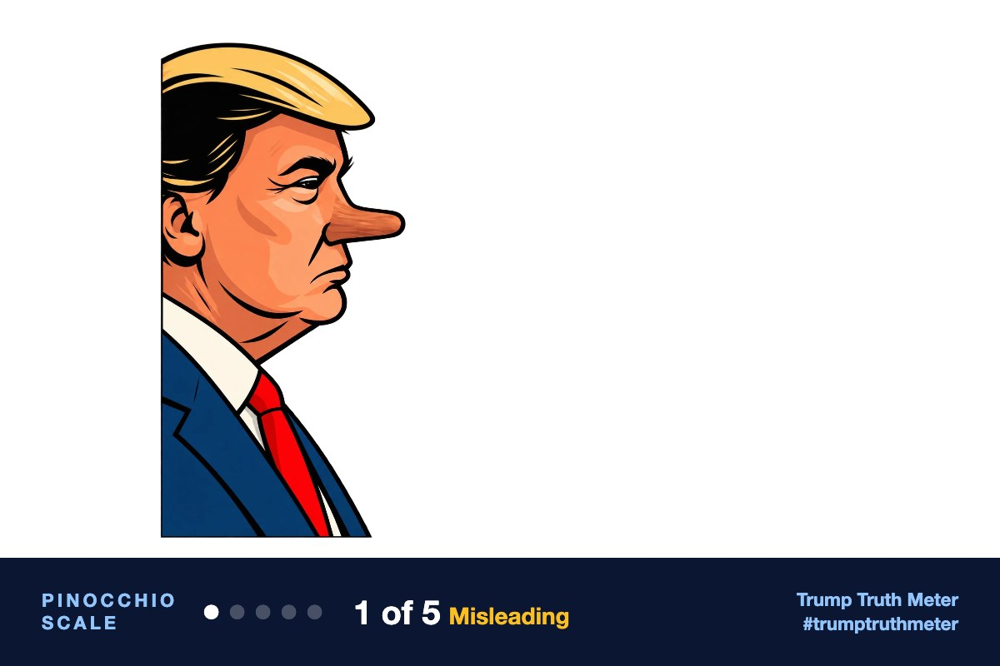

Trump stacks wins: SCOTUS unleashes voter citizenship checks while feds put machines on leash: https://justthenews.com/government/white-house/supreme-court-cisa
[Link: Trump stacks wins: SCOTUS unleashes voter citizenship checks and CISA puts machines on a leash — Although split along party affiliation, the United States Supreme Court underscored the validity of Trump's plans to shore up election integrity. In addition, the Cybersecurity and Infrastructure Security Agency issue a report telling election offices to treat infrastructure as a year-round target. https://justthenews.com/government/white-house/supreme-court-cisa]
MisleadingAccuracy 62/100

The post shares a real Sept. 24–25 news package, but the headline oversells both items. The Supreme Court issued an interim stay letting the administration resume expanded SAVE citizenship checks, not a final validation of Trump's election plans, and CISA's election-security plan is voluntary guidance, not a federal leash on voting machines.
Editor’s note: All three reviewers agreed the post is a Just the News repost about a real Sept. 25 Supreme Court stay on SAVE citizenship checks and a real CISA election-security plan, and that neither development is as sweeping as the headline. Claude scored it mostly truthful and wrongly linked the Court claim to an earlier “election win” item; ChatGPT and Grok correctly treated the “validity of Trump’s plans” and “machines on a leash” lines as misleading spin. I sided with that reading because the central framing, not the underlying events, is what the post asserts.
AI fact-check by Claude Opus 5.5 + ChatGPT (gpt-6-sol) + Grok 4.7. Checked Sep 28, 2026, 7:42 AM ET.